Compound — A pet-themed music player APP interface, its progress bar is a slow-cr
A pet-themed music player APP interface, its progress bar is a slow-crawling caterpillar, pause button is a curled up hedgehog.

Judge — Direct
- FAILCompound - Feature Matching — The image displays a music player interface. There is a green and yellow cartoon caterpillar positioned directly above the progress slider, visually representing the progress of the track. This matches the first part of the requirement. However, the central pause button is a standard circular button with two vertical bars. To the right of the pause button, there is a separate square icon containing an illustration of a hedgehog. This hedgehog is not the pause button, and it is depicted from the side, not curled up. Therefore, the requirement for the pause button to be a curled-up hedgehog is not met.
Judge — Continuum
- PASSCompound - Feature Matching — The image displays a music player interface where the progress bar incorporates a green, segmented illustration of a caterpillar crawling along a line. The central control button, positioned where a play/pause button would be, is an illustration of a brown, spiky hedgehog curled into a ball.
What the agent did
Thinking
What the user is asking for is the UI of a pet-themed music player app, and they want the progress bar to be a slowly crawling caterpillar, and the pause button to be a curled-up hedgehog. Let me think about the design: - Mobile app UI for a music player (portrait, phone screen style) - Album art area - Song title / artist - Progress bar: a caterpillar crawling along the track (the caterpillar itself is the playhead / progress indicator, with a segment-like track behind it) - Controls: previous, play (or pause), next - Pause button: a curled-up hedgehog (a hedgehog curled into a ball = the pause icon) Let's generate with flux2-klein. Since it's an app UI, a tall aspect ratio (1024x1536 or similar). The tool's default is 1024x1024. We can set width/height. Phone UI — a portrait like 1024x1792? Let's go with 1024x1536. Prompt: "Cute mobile music player app interface, portrait smartphone screen design, soft pastel background, album artwork of a sleeping kitten, song title text 'Little Cat Nap' by 'Meow Beats', progress bar designed as a cute green caterpillar crawling along a winding trail with its segments as progress markers, current time 1:24 and total time 3:45, playback controls: previous track button, play/pause button designed as a curled-up brown hedgehog ball, next track button, shuffle and repeat icons, modern flat design, soft rounded UI cards, warm cozy colors" Text rendering is a risk — flux2-klein may produce garbled text. But short song titles might work out. Let's generate first and then check. Since this is a UI, small text may come out garbled. I'll keep the text minimal and check with inspect_region. Let's generate.
Step 1 — `generate_image`
{
"prompt": "Cute pet-themed music player app interface, mobile phone UI screenshot, portrait layout, soft cream pastel background. Top: album artwork square showing a sleeping kitten on a knitted blanket, below it song title \"Little Cat Nap\" and artist \"Meow Beats\" in clean modern sans-serif. Middle: a playful progress bar drawn as a winding garden path trail, with a cute round green caterpillar made of 5 small spheres crawling along the path as the playhead, tiny red numbers \"1:24\" on the left and \"3:45\" on the right of the trail. Bottom: three large round playback buttons \u2014 previous track (skip back icon), center pause button shaped like a curled-up brown hedgehog ball with soft spines and a tiny pink nose, next track (skip forward icon). Below the buttons small shuffle and repeat icons. Flat modern UI design, soft rounded corners, warm cozy peach and sage green color palette, clean vector illustration style, high quality app design",
"width": 1024,
"height": 1536,
"model": "flux2-klein"
}Result img_0
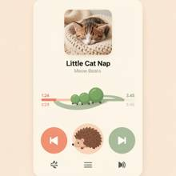
Thinking
This is a pretty good result. Let me check the details: 1. Progress bar as a caterpillar: there's a caterpillar on top of a path, and a progress bar. The caterpillar has green spheres, and there's a trail/progress bar behind it. The time displays "1:24" and "3:45" — but I can see duplicated times: below "1:24" there's "0:24", and below "3:45" there's "3:45". Let me zoom in to verify the text. 2. Pause button as a curled-up hedgehog: the central button has a hedgehog, but it's lying down / in profile, not "curled up into a ball". The user wanted a curled-up hedgehog. The current hedgehog is stretched out. This is a key requirement. 3. The play button should probably display pause. It's a hedgehog on a circular button — no problem there. Let me inspect the region of the times and check for text garbling.
Model
The first version is looking pretty good — the caterpillar progress bar is working nicely. Let me check the text and details up close.
Step 2 — `inspect_region`
{
"image": "img_0",
"roi": [
190,
470,
780,
580
]
}Result img_1
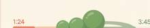
Step 3 — `inspect_region`
{
"image": "img_0",
"roi": [
330,
660,
590,
880
]
}Result img_2
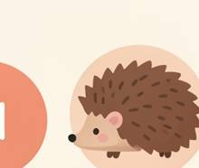
Thinking
From the inspection results: 1. The time region looks correct in this crop: "1:24" on the left, "3:45" on the right. However, in the full image, there were duplicates below them: "0:24" under "1:24", and "3:45" under "3:45". To confirm the duplicated text, I'll try inspecting a wider, lower region. 2. The hedgehog is in a profile, lying pose — the user wanted a curled-up hedgehog as the pause button. The hedgehog looks cute, but it's not curled into a ball. This is a key requirement that should be fixed. Let me check the lower region for the duplicated times.
Model
The text reads "1:24" / "3:45", but I noticed there's a duplicated time displayed below them in the full image. Also, the hedgehog is lying sideways, not curled into a ball. Let me first check the time area.
Step 4 — `inspect_region`
{
"image": "img_0",
"roi": [
200,
490,
760,
600
]
}Result img_3
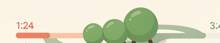
Thinking
Hmm, this crop mostly shows the caterpillar's path. In the original full image, it looked like there was "0:24" below "1:24", and another "3:45" below the right-side "3:45". To check the lower text row, let me try cropping a bit further down.
Step 5 — `inspect_region`
{
"image": "img_0",
"roi": [
200,
510,
760,
590
]
}Result img_4
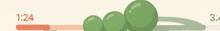
Thinking
Hmm, my crop isn't catching the row of duplicate text at the bottom. Looking at the original full image again: at coordinates (in the displayed 810px-wide version) around y=455-480, there's a "1:24" at the top-left of the path, and a "0:24" below it. The display image is about 810x810? Actually, the original image is 1024x1536, but in the display it's scaled. Let me reconsider: in the displayed image (roughly 810px wide based on how it looks), "1:24" is at (approx. 200, 447), and "0:24" is at (approx. 200, 478). Scale factor: displayed width ~810 vs actual 1024 → 1.264. So actual coordinates: "1:24" is at (~253, ~565), "0:24" is at (~253, ~604). My crop [200,510,760,590] should have included actual y 510-590, which would cover "1:24" at y~565 but not the "0:24" at y~604. And indeed, the crop shows "1:24" in the upper-left and a partial progress bar. So the lower duplicate is probably around y~590-640. Let me crop [200, 580, 760, 680] to check for the "0:24" duplicate.
Step 6 — `inspect_region`
{
"image": "img_0",
"roi": [
180,
560,
780,
680
]
}Result img_5
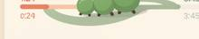
Thinking
Confirmed: below "1:24" there's a duplicate "0:24", and below "3:45" there's a second "3:45". So the time labels are doubled — a defect that should be fixed. Also, the hedgehog is in profile, not curled up. Two edits needed: 1. Remove the duplicate time labels (leave one "1:24" and one "3:45"). 2. Change the hedgehog to a curled-up ball shape (curled into a ball) for the pause button. Per the multi-step composition rule, I should split into single-entity edits. First fix the hedgehog (the main requirement), then fix the duplicate text. Or use edit_image twice sequentially (each edit depends on the previous result, so the calls can't be parallelized). Edit 1: hedgehog → curled up. Prompt: "Replace the hedgehog on the center pause button with a hedgehog curled up into a tight ball, spines forming a round ball shape, only the tip of the pink nose and a small closed eye visible at the bottom of the ball. Keep everything else identical." Edit 2: Delete the "0:24" text below "1:24", and also delete the duplicate "3:45" below the right-side "3:45". Prompt: "Remove the small duplicate time text '0:24' under '1:24' and the duplicate '3:45' under the right-side time, keeping only a single '1:24' label on the left and a single '3:45' label on the right." Since these are sequential edits, I'll execute them one at a time.
Model
Confirmed: below each of the time labels, there are duplicated ghost numbers ("0:24" and a second "3:45"). Also, the hedgehog needs to be curled into a ball. First, let's fix the hedgehog.
Step 7 — `edit_image`
{
"image": "img_0",
"model": "flux2-klein",
"prompt": "Replace the sideways hedgehog in the center round pause button with a hedgehog curled up into a tight round ball: brown spines forming a full circle, with just the tip of a small pink nose and one tiny closed eye peeking out from the bottom of the ball. Keep the button's peach circle, position, and all other parts of the interface exactly the same."
}Result img_6
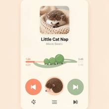
Thinking
Interesting — the edit changed the album artwork from a sleeping kitten to a real hedgehog! This is an unintended change (the album art was a sleeping kitten, which was fitting for "Little Cat Nap" and the pet theme). The hedgehog in the center button is now a bit more curled up, but it still looks like it's lying down in profile — it's kind of ball-like, but still has a profile face. Hmm, it's improved but not really a "curled-up" ball. Also, the album art now shows a hedgehog instead of a kitten, which contradicts "Little Cat Nap / Meow Beats." Wait, actually the album art is now a photo of a hedgehog in a knit basket. This is a change that was neither requested nor desirable. I should restore the kitten album art and make the button's hedgehog more of a curled-up ball. Let me look at the center button in detail to assess the degree of the curl.
Model
The edit worked, but it had an unintended side effect — the album art got changed from the sleeping kitten to a real hedgehog, which no longer matches the title "Little Cat Nap." Let me check the curl of the button's hedgehog, then fix both.
Step 8 — `inspect_region`
{
"image": "img_6",
"roi": [
330,
660,
590,
880
]
}Result img_7
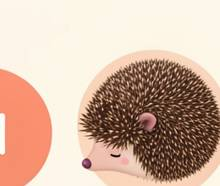
Thinking
The hedgehog on the center button is still in a sideways lying pose, with its snout facing left — it's not curled up into a ball. What the user asked for was "the pause button is a curled-up hedgehog." A curled-up hedgehog should be a spiny ball with the face tucked in (mostly hidden, with only the nose/eyes visible at the bottom). The current one is an oval-shaped hedgehog lying down. More clearly curled-up is needed: a round ball of spines, with a small face tucked into the bottom. Furthermore, the album art needs to be restored to a sleeping kitten. Plan: 1. Edit the center button: make the hedgehog a fully curled-up ball (tucked in, round shape, with only the nose and closed eyes peeking out from the bottom). 2. Edit the album art: return it to a sleeping kitten. 3. Remove the duplicated times. These are sequential edits on the same image. Do the button hedgehog first — with a stronger prompt: "the hedgehog is curled up into a perfectly round spiny ball, face completely tucked in, only the tiny pink nose and closed eyes visible at the bottom edge of the ball." After that, the album art: "Return the album artwork to a photo of a cute sleeping tabby kitten wrapped in a cream-colored knit blanket." The original was a photograph of a kitten, but the edit may have produced an illustration. That's fine — a cute sleeping kitten is fine. After that, delete the duplicated times. Let's execute edit 1.
Model
The button's hedgehog is still lying on its side — I need a real curled-up ball. I'll try making a stronger edit on the button.
Step 9 — `edit_image`
{
"image": "img_6",
"model": "flux2-klein",
"prompt": "In the center round peach button, redraw the hedgehog completely curled up into a tight round ball: a perfect circle of brown spines with the face fully tucked inside, only the tiny pink nose tip and one small closed eye peeking out at the very bottom of the ball, like a hedgehog sleeping in a tight curl. The ball fills the peach circle. Do not change any other part of the interface."
}Result img_8
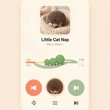
Thinking
The central button now displays a hedgehog curled up into a ball — a spiky round ball with a small face at the bottom. This matches "a pause button with a curled-up hedgehog." Remaining issues: 1. The album artwork shows a hedgehog, but the song is "Little Cat Nap" by "Meow Beats" — a kitten would fit the theme better. The original img_0 had a sleeping kitten, and it was fine. I should restore the kitten album art. I can pass img_0 as a reference and tell the editor to restore the album artwork to a sleeping kitten as in the reference. 2. Duplicate times: a "0:24" under the "1:24", and a second "3:45" under the right-side "3:45". I'll do both with edit_image calls, sequentially. First, restore the album art using img_0 as reference.
Model
The pause button is now a proper curled-up hedgehog ball. Next, I'll use the first version as a reference to restore the album art of the sleeping kitten, and then fix the duplicated timestamps.
Step 10 — `edit_image`
{
"image": "img_8",
"references": [
"img_0"
],
"model": "flux2-klein",
"prompt": "In the square album artwork at the top, replace the hedgehog with the cute sleeping tabby kitten from the reference image, lying curled on a cream knitted blanket, eyes closed. Keep the artwork square shape, position, and everything else in the interface exactly the same."
}Result img_9
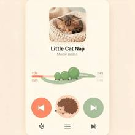
Thinking
Ugh — the edit restored the kitten's album art, but at the same time it reverted the central button's hedgehog back to the sideways-lying style (the original flat-illustration sideways hedgehog came back). The editor treated the whole image as a "restore" operation. This is the risk of reference-based editing. Current state of img_9: - Album art: kitten ✓ (restored) - Central button: sideways-lying hedgehog ✗ (needs to be curled up again) - Duplicate time display: still present ✗ img_8 was: curled-up button hedgehog ✓, but hedgehog album art ✗, duplicate time display ✗. So I need to combine the two. Options: - From img_8 (which has the curled-up button), edit only the album art to a kitten. The previous edit used img_8 as the base with reference img_0, and it reverted the button too. To limit the scope, this time I'll try again on img_8 with a narrower instruction that explicitly says "change only the album artwork, do not touch the hedgehog button at the bottom." - Alternatively, from img_9 (kitten art), edit the button to be curled up again. The previous button curl edit (img_6→img_8) succeeded without touching anything else. So if I redo the curl edit on img_9, the kitten art should be preserved. The safer option: img_9 → curl edit (this worked before without side effects). After that, remove the duplicate time display. Let me execute the curl edit on img_9 with the same prompt that worked before.
Model
The album art is restored, but that edit reverted the button's hedgehog to the sideways pose. Re-applying the curl edit to this version.
Step 11 — `edit_image`
{
"image": "img_9",
"model": "flux2-klein",
"prompt": "In the center round peach button, redraw the hedgehog completely curled up into a tight round ball: a perfect circle of brown spines with the face fully tucked inside, only the tiny pink nose tip and one small closed eye peeking out at the very bottom of the ball, like a hedgehog sleeping in a tight curl. The ball fills the peach circle. Do not change the album artwork or any other part of the interface."
}Result img_10
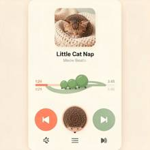
Thinking
Hmm — the central button is now displaying a curled-up ball ✓ (a round spiny ball with a small face at the bottom — actually, the face at the bottom has small closed eyes, so it looks pretty curled-up). But the album art has gotten weird: it looks like a hybrid — a kitten's face, but with hedgehog spines on top of the head (a mixed creature). The editor blended the hedgehog from img_8 into the kitten art. This is an artifact. Current state of img_10: - Central button: curled-up hedgehog ball ✓ (good — the bottom face with closed eyes reads as "curled up") - Album art: kitten + hedgehog spine hybrid ✗ - Duplicate time display: still there ✗ The album art needs to be cleanly fixed. Let me try using img_0 (the clean kitten version) as a reference again and edit just the album art on img_10, but this time emphasize "a kitten only, no hedgehog, no spines, a pure sleeping tabby kitten." Risk: the button might revert again. I'll explicitly instruct "do not change the central button." If the reference approach keeps breaking other elements, alternative: use inpaint_image with a mask restricted to the album art region. The album art is a square, roughly in the range x [295, 520], y [45, 285] on the 780-wide display... in actual 1024x1536 coordinates: display width ~780? Let me calculate from the display: the displayed image looks about 780px wide. The album square in display coordinates: x from about 285 to about 495, y from about 42 to about 247. Scale 1024/780 = 1.313. So in actual pixels: x [374, 650], y [55, 324]. First let me try edit_image with explicit constraints. If it fails again, fall back to mask inpainting.
Model
The button's hedgehog is now nicely curled up, but the album art has turned into a weird kitten/hedgehog hybrid. Let's cleanly fix the album art, and keep everything else as is.
Step 12 — `edit_image`
{
"image": "img_10",
"model": "flux2-klein",
"prompt": "In the square album artwork at the top, replace the current animal with ONLY a cute sleeping tabby kitten: soft brown tabby fur, no spines, no hedgehog features, just a kitten with closed eyes and ears resting on a cream knitted blanket. This is the only change: do not touch the center hedgehog button, the caterpillar progress bar, or any other element."
}Result img_11
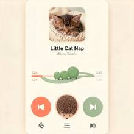
Thinking
This is currently looking very good: - Album art: a cleanly sleeping tabby kitten ✓ - Center button: a curled-up hedgehog ball with a tiny face at the bottom ✓ - Caterpillar progress bar on a path ✓ - Remaining defect: duplicated time labels — "0:24" below "1:24", and "3:45" below "3:45". Let me fix the duplicated time display with a targeted edit. Prompt: "Remove the small duplicate time text '0:24' below the '1:24' label and the duplicate '3:45' below the '3:45' label on the right side. Keep one '1:24' on the left and one '3:45' on the right, positioned above their respective ends of the progress bar. Do not change anything else." The model's text removal is decent, but the ghost labels are in a faint gray. Let's try it.
Model
The album art is clean now. Last defect: the duplicate ghost time labels.
Step 13 — `edit_image`
{
"image": "img_11",
"model": "flux2-klein",
"prompt": "Remove the faint duplicate time texts: delete the small \"0:24\" ghost label under the \"1:24\" on the left, and delete the second faint \"3:45\" ghost label under the \"3:45\" on the right. Keep exactly one orange \"1:24\" label above the left end of the progress bar and one green \"3:45\" label above the right end, on the same baseline. Do not change the caterpillar, the hedgehog button, the album artwork, or anything else."
}Result img_12
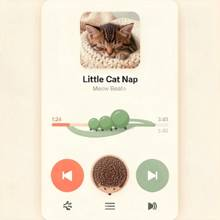
Thinking
Progress: The "0:24" ghost on the left has been deleted ✓. However, the duplicate "3:45" on the right is still there (there's a faint "3:45" below the main "3:45"). Let me check that area.
Model
Left ghost label removed, but the right one persists. Let me verify up close, then remove it.
Step 14 — `inspect_region`
{
"image": "img_12",
"roi": [
640,
500,
800,
610
]
}Result img_13
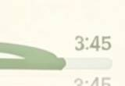
Thinking
Confirmed: the faint "3:45" ghost is still remaining below the main "3:45" label. Need to erase just that ghost text. This is a small, precise text removal in a specific location. edit_image might work, but it's already failed to delete it once (the previous attempt removed the left ghost, but the right one was left behind). Options: 1. Try edit_image once more with a very specific instruction. 2. Use inpainting: segment the text? SAM3's text description "the small text 3:45 below the other text" is unreliable for text. I could use segment_points with a click on the ghost text, then inpaint that small region with "plain cream-colored background." The background there is a solid cream color, so it should be easy to inpaint. Coordinates of the ghost "3:45" in the actual 1024x1536: in the full display (display width about 780), the ghost is roughly at x 555-600, y 480-495 → scale 1.313: actual x [729, 788], y [630, 650]. Hmm, let me look at the full image of img_12 again: the display is about 780x780? Wait, the display looks like 780 wide and 780 tall, but the actual is 1024x1536 — the display is scaled non-uniformly? No, the display should be uniform scaling: 1024→780 means 1536→1192. But the display image looks almost square… the returned rendering is about 780x780, but that's just the preview. The coordinates in my inspect_region calls are in the actual pixel space (1024x1536), and they worked correctly. In img_12 (1024x1536), the main "3:45" is around (760, 835)? Let me estimate from the preview: in the preview about 780 wide, the main 3:45 is at (575, 424) → actual: x = 575*1024/780 ≈ 753, y = 424*1536/780 ≈ 833. The ghost 3:45 is at (575, 462) → actual x ≈ 753, y ≈ 910. So the ghost text is roughly at x [715, 795], y [895, 925] in actual pixels. In the inspect_region with roi [640,500,800,610], the crop showed the main 3:45 at the top and the ghost at the bottom — wait, that crop was y 500-610, and it showed both the main "3:45" and the partial ghost "3:45" below it. So in actual coordinates: the main 3:45 ≈ y 540-570, the ghost ≈ y 590-620 (below the crop's bottom edge). And x: within the crop [640,800], the text appears at about 55-95% of the crop width → x ≈ 640 + 0.55*160=728 to 640+0.95*160=792. So the ghost is at about x [725, 795], y [585, 625]. For precision, use segment_points with a click at (760, 605) on the ghost text, and a negative click at (760, 550) on the main text. Then invert? No — I want the mask = only the ghost text region; inpaint that with "plain cream-colored background matching the surrounding app card." The text is small, so a small mask around the glyphs. Actually, a simpler alternative: edit_image with a clearer prompt: "Erase the faint gray '3:45' text below the main green '3:45' label, replace it with plain cream-colored background." The previous edit failed at this, but the left side succeeded — maybe the model just focused on one of them. I'll try edit once more; if it fails, I'll go with segment_points + inpaint.
Model
The ghost "3:45" below the main label is still there. One more targeted edit attempt.
Step 15 — `edit_image`
{
"image": "img_12",
"model": "flux2-klein",
"prompt": "There is a faint gray \"3:45\" text directly below the main green \"3:45\" label near the right end of the progress bar. Erase that lower faint \"3:45\" completely, filling its spot with the plain cream background. Keep the main green \"3:45\" label exactly as is. Do not change anything else in the image."
}Result img_14
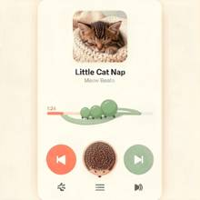
Thinking
Currently, the ghost "3:45" is gone, but the main "3:45" label has also been erased! Now there's no time label on the right side. The "1:24" on the left side remains. We need to restore the "3:45" on the right side. Let's add it back via editing: "Add a green '3:45' time label above the right end of the progress bar path, aligned with the orange '1:24' label on the left." The text rendering of "3:45" is short, so it should be feasible.
Model
The ghost is gone, but the edit removed the main "3:45" label too. Restoring it.
Step 16 — `edit_image`
{
"image": "img_14",
"model": "flux2-klein",
"prompt": "Add the green text label \"3:45\" above the right end of the green progress path, at the same height and size as the orange \"1:24\" label on the left side of the path. Only add this text; change nothing else in the image."
}Result img_15
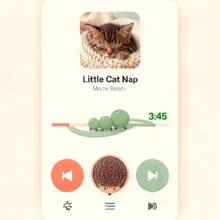
Thinking
The "3:45" label was restored, but there are two problems: 1. The left "1:24" label is gone! 2. The "3:45" is in a larger green color, positioned slightly higher than the left label (though since there's nothing there, it's fine for now), and it's overlapping the end of the path. In other words, this edit added the right label but erased the left one. Ugh, a seesaw phenomenon. Current state of img_15: - Left label: missing - Right label: "3:45" in bold green (a bit larger than the original style but within acceptable range) Let's add the "1:24" back on the left side. Prompt: "Add an orange text label '1:24' above the left end of the progress bar. Make it the same size as the green '3:45' label on the right."
Model
"3:45" is back, but now the "1:24" on the left vanished. Adding it back.
Step 17 — `edit_image`
{
"image": "img_15",
"model": "flux2-klein",
"prompt": "Add the orange text label \"1:24\" above the left end of the progress bar trail, at the same height and size as the green \"3:45\" label on the right. Only add this text; change nothing else in the image."
}Result img_16
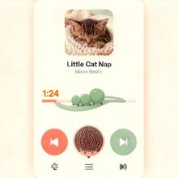
Thinking
The seesaw effect continues: "1:24" is back on the left side (bold orange, somewhat larger but no problem), but the "3:45" on the right side has disappeared again. Every time I add one label, the other one gets erased. This is frustrating. The edit model is treating the two labels as mutually exclusive, or the "change nothing else" instruction is being applied too broadly to similar text elements. Alternative approach: use inpaint with a precise mask for just one label region. Inpaint is text-driven only and cannot copy from other images, but I can describe the content: "bold green text '3:45'". If I make a small mask around where the right label should be, Fill will render the text into that region. FLUX.1 Fill is fairly good at small text when guidance is high (default 30). Plan: 1. Use segment_points to click where "3:45" should be (on the right, above the end of the path) to create a mask. Or simply use segment_boxes with a box around the right label region. 2. Inpaint with the prompt "green digital time text 3:45 on a cream background". However, the mask needs to cover the text region with some margin. If the mask is just an empty area, Fill will paint the text there. Box in actual coordinates: the right label area is around x [700, 800], y [770, 830]? Let me calculate from the preview (display width 780, actual 1024, scale 1.313; height display ~780 → actual 1536, same scale 1.969? No wait, that can't be, it has to be uniform). Hmm, the preview is 780x780 but the actual is 1024x1536 — the preview is probably being letterboxed/squished. Actually, inspect_region takes actual pixel coordinates, and my earlier crops matched: with crop [640,500,800,610] I got both the main and ghost 3:45. In the preview, the main 3:45 is at display (575, 424), the ghost at (575, 462). The preview appears to be scaled to fit ~780x780 from 1024x1536, so it's squished vertically (scale_x=0.7616, scale_y=0.5078)? That doesn't match my earlier successful crops... Let me verify: crop [640,500,800,610] → if scale_x=0.7616, then display x [487,609], and if scale_y=0.5078, then display y [254,309]. But in that crop image, the main "3:45" appeared at the top of the crop and the ghost below it. In the full preview, the main 3:45 is at y≈424, the ghost at y≈462. 500*0.5078=254, 610*0.5078=310. That doesn't include 424/462. So the preview scaling must be uniform: 1024→780, meaning 0.7616, so 1536→1169. The preview image I'm seeing might be rendered at a different size than I assumed. Let me stop guessing the display coordinates. Better approach: use the successful crops as a reference. The crop [640,500,800,610] (width 160, height 110) showed the main "3:45" in the upper right and the ghost at the bottom. The returned crop image (img_13) was 600x? px. Main 3:45 at the top of the crop: in actual coordinates roughly y 520-560, x 720-800. Ghost at y ~590-630. In img_16 (the current image), the right label area: "1:24" is on the left side at roughly x [245,335], y [790,830]? From img_16's preview: 1:24 is at display (205, 410)... again the display scaling problem. Hmm. Let me just use a segment/box approach with normalized coordinates (fractions of the image). In img_16, where is the right label area? In img_15, the green "3:45" was on the right side, at roughly x 68-77% of the width, y 50-57% of the height. In img_16 it's gone, but the area is the same: right end of the path, above the right end of the path. The path's right end is at x ≈ 75% of the width, y ≈ 57% of the height. The label should be above that: y ≈ 50-56% of the height. So box in normalized coordinates: [0.66, 0.48, 0.80, 0.58]. segment_boxes on img_16 → mask. Then inpaint with the prompt "bold green text '3:45' on a plain cream background". Actually wait — FLUX.1 Fill's text rendering: small text might come out garbled. "3:45" is simple (digits and a colon), so probably fine. Risk: the mask only covers the empty background, so Fill regenerates that region with the described text. Good. Let me try it. Actually, a simpler idea first: the seesaw might be because the model re-renders the whole label row each time. Inpainting with a box mask is the more reliable route. Let me do it. One more consideration: the bold orange "1:24" on the left side of img_16 is a bit larger than the original thin style, and "3:45" will likely also be bold green (like in img_15). That's a stylistic consistency between the two labels, so it's fine — they'll match each other. Let me create the box mask.
Model
The "1:24" is back, but each time I add one, the "3:45" keeps disappearing. This time, to prevent the label from disappearing again, I'll use a masked inpaint limited to just the area on the right side of the label.
Step 18 — `segment_boxes`
{
"image": "img_16",
"boxes": [
[
0.64,
0.47,
0.82,
0.58
]
],
"normalized": true
}Result img_17
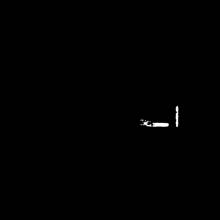
Thinking
SAM didn't detect the box as an object — it returned a nearly empty mask (only a small fragment near the edge of the path). SAM3's box prompt is meant for segmenting objects, not for creating a rectangular region. What I need is a plain rectangular mask, not a segmentation. Options: 1. Use edit_image with a different strategy — instead of "add the label, don't change anything else," rephrase it so the model doesn't treat the two labels as a pair to be balanced. For example: "Add green text '3:45' in the upper right, above the right end of the green path. Also keep the orange '1:24' label on the left exactly as it is." Explicitly naming the existence of both labels might work. 2. Create a rectangular mask myself. The toolset has no direct "draw a rectangle" tool, but… can I create a mask image via generate_image? That's unreliable for an exact rectangle. Hmm. segment_points with points and labels? Points just prompt SAM to find a region around them. Not rectangular. Actually — I can make a mask via inpaint with an inverted mask from segmenting something, but… there's no text there to segment. Alternative: use edit_image with a prompt that explicitly lists the final state of both labels: "Above the left end of the progress bar is an orange '1:24'. Above the right end of the progress bar is a green '3:45'. Ensure both labels are present and nothing else is changed." This describes the target state, and the model just needs to add the missing one while preserving the one that exists. Let me try this.
Model
SAM can't box an empty region — that mask is useless. Retrying with an edit that states both labels' target state.
Step 19 — `edit_image`
{
"image": "img_16",
"model": "flux2-klein",
"prompt": "Final time labels for this music player: the orange \"1:24\" above the left end of the progress bar must remain exactly as it is now, AND add the green \"3:45\" above the right end of the green path, at the same height and bold size as the \"1:24\". After this edit both labels must be visible at the same time. Change nothing else."
}Result img_18
Thinking
With this, both labels are now visible: the orange "1:24" on the left, and the green "3:45" on the right. Let me zoom in to verify the text: - "1:24" — need to confirm the digits - "3:45" — need to confirm the digits Let's check both regions.
Model
Both labels are present now. Verifying the digits by zooming.
Step 20 — `inspect_region`
{
"image": "img_18",
"roi": [
220,
760,
360,
840
]
}Result img_19
Step 21 — `inspect_region`
{
"image": "img_18",
"roi": [
640,
750,
800,
840
]
}Result img_20
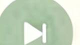
Thinking
My crop coordinates were off — instead of the time label, I ended up capturing the previous/next buttons. The label is higher up. In img_18's preview, "1:24" is around y ≈ 420 (in a preview with height ~790?), and the button is around y ≈ 640. Since my crop at y 760-840 hit the button, the label must be at a lower y value. Let me reconsider: in img_18's preview (display is about 790x790, actual is 1024x1536), the preview is a scaled-down version. If the preview height is 790 and actual is 1536, then scale = 0.514. The "1:24" in the preview is at y ≈ 418 → actual y ≈ 418/0.514 ≈ 813. The button in the preview is at y ≈ 640 → actual ≈ 1245. But my crop at actual y 760-840 captured the button?? That contradicts. Wait, my crop [220, 760, 360, 840] returned the left side of the orange previous button. So the button's actual y ≈ 760-840?? That would mean the actual height is smaller than I thought, or the preview isn't 790 in height. Let me calculate using known correspondences: in img_16's preview, the bottom icon (shuffle) is at the bottom, roughly y 745 (preview). In img_12, I successfully cropped [640, 500, 800, 610] and got the 3:45 label. In img_12's preview, the 3:45 label was at y ≈ 424 (preview), and the ghost was at 462. So the preview y 424-490 ↔ actual y 500-610 → scale ≈ 500/424 ≈ 1.18 (actual/preview). Therefore preview width 780 → actual 780*1.18 ≈ 920? Hmm, not exactly 1024, but roughly. So preview scale ≈ 0.78, and preview height is 1536*0.78 ≈ 1198, not 790. The image I'm seeing must be being displayed smaller than I think. Whatever. So for img_18: "1:24" in the preview is at (258, 420) → actual ≈ (258/0.78, 420/0.78) = (330, 538)?? Hmm, wait, that doesn't add up either. Because in img_12, the 3:45 preview (575,424) → actual (575/0.78=737, 424/0.78=544), which matches my successful crop x 640-800, y 500-610. OK, so actual ≈ preview / 0.78. For img_18: "1:24" in the preview is roughly (258, 420) → actual (331, 538). "3:45" in the preview is (560, 420) → actual (718, 538). So the label row is at actual y ≈ 510-570. My crop y 760-840 was way below that (hit the button at actual y ≈ 780-1100?). In img_18's preview the button is at y ≈ 640 → actual ≈ 820. Right! So the button is at actual y ≈ 800-900, and the label is at y ≈ 510-580. Therefore, crop the label: left [270, 495, 400, 585], right [640, 490, 800, 585].
Model
My crops hit the buttons — the labels are higher. Re-cropping.
Step 22 — `inspect_region`
{
"image": "img_18",
"roi": [
250,
490,
420,
590
]
}Result img_21
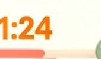
Step 23 — `inspect_region`
{
"image": "img_18",
"roi": [
620,
480,
810,
590
]
}Result img_22
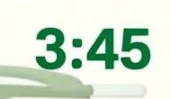
Thinking
Both labels are now clearly legible: - "1:24" in orange on the left ✓ - "3:45" in green on the right ✓ No more ghost labels. To make sure nothing else has regressed, let me do a final check of the whole image: - Album art: sleeping kitten ✓ - Title "Little Cat Nap" / "Meow Beats" ✓ (confirmed the spelling in the earlier full view; re-verify with the final full view) - Caterpillar crawling on the path ✓ - Curled-up hedgehog on the center pause button ✓ - Previous/Next buttons ✓ - Shuffle/Playlist/Volume icons ✓ One remaining question: does this interface clearly read as a "pause" button? The center button is a curled-up hedgehog (per the user's spec, the pause button is a curled-up hedgehog). In img_18, the center button is a spiky hedgehog ball with a small face at the bottom, inside a peach-colored circle. Good. Also, the caterpillar's "slow crawl" — the caterpillar sits on the path at about the 40% position, with the progress bar filled orange up to that point. Good. Let me do a final full-image review of img_18 and mark it as best. Actually, I should mark_best on img_18 right now. Let me look at the full image once more... the last full rendering of img_18 looked correct. To confirm the title text hasn't changed, let me quickly inspect the title area.
Model
Both time labels now render correctly: "1:24" in orange, "3:45" in green. Final check of the title text before marking.
Step 24 — `inspect_region`
{
"image": "img_18",
"roi": [
300,
330,
720,
460
]
}Result img_23
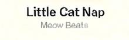
Thinking
The title "Little Cat Nap" is spelled correctly. The artist line reads "Meow Beat8" — hmm, the last character looks like an "8" instead of an "s". Let me zoom in more. It's showing "Meow Beat8" — the final glyph looks like an 8. This might be a rendering artifact, or it might actually be garbled. Let me crop more tightly and zoom in.
Model
Title is perfect, but the artist line may read "Meow Beat8" — the last glyph looks like an 8. Zooming closer.
Step 25 — `inspect_region`
{
"image": "img_18",
"roi": [
410,
390,
600,
450
]
}Result img_24
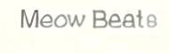
Thinking
The last glyph of "Meow Beats" is indeed wrong — it looks like "8" or "θ" (theta), not an "s". "Meow Beat8" — the s is garbled. This is a small text fix. Options: 1. edit_image: "Correct the artist name 'Meow Beat8' to 'Meow Beats', replacing the last character with a lowercase s." The model might be able to handle a single character fix. 2. Inpaint with a mask around the last character: but I can't make a rectangular mask directly. segment_points on that character? SAM might be able to segment the text glyph "8" as an object... iffy. I'll try edit_image first.
Model
The final character is garbled (it looks like an "8" instead of an "s"). I'll fix that single character.
Step 26 — `edit_image`
{
"image": "img_18",
"model": "flux2-klein",
"prompt": "The artist name under the song title currently reads \"Meow Beat8\" with a wrong last character that looks like the number 8. Change that last character to a lowercase letter \"s\" so the name reads \"Meow Beats\". Fix only that one character; do not change any other text or element in the image."
}Result img_25
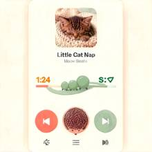
Thinking
The "s" on "Meow Beats" was fixed (it looks correct in the overall preview, but needs verification), but the green "3:45" got corrupted into "S:∇" (a broken glyph). Ugh — the edit leaked into the other text. Current state of img_25: - "Meow Beats" — probably fixed (needs zoom verification) - "1:24" ✓ - "3:45" → broken into "S:∇" ✗ Every time I touch one piece of text, the other text on the same line degrades. This seesaw phenomenon is a known weakness of text editing in FLUX. Strategy: Use masked inpainting for the "3:45" region. I need a rectangular mask. I can't draw one directly, but I could: 1. segment the broken "S:∇" text? SAM3 might treat the broken glyphs as objects. Try segment with description "the green text symbol on the right side". 2. Or use segment_points with points on the glyphs. The inpaint fill will be text-driven: the prompt would be "bold green text '3:45' on a cream-colored background". If the mask tightly covers the broken glyphs, FLUX.1 Fill might be able to redraw them correctly. The text is small (about 30px), but Fill can often render simple digit strings. First, verify the "Meow Beats" fix, then segment the broken green text. Actually — wait. There's another approach: generate the two labels as a clean base. The best version so far for the label line was img_18 (both labels correct, but with the "Beat8" issue). I can mark_best on img_18 as a fallback, then try further fixes on img_25. Let me first verify "Meow Beats" on img_25.
Model
The "s" is probably fixed, but the edit corrupted the "3:45" into broken glyphs. Let me verify the artist line first.
Step 27 — `inspect_region`
{
"image": "img_25",
"roi": [
410,
390,
600,
450
]
}Result img_26
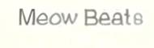
Thinking
"Meow Beats" is still showing a broken last character (looks like "8"/"θ"). In other words, that edit failed to fix it — meanwhile, it ended up corrupting the "3:45". State assessment: - img_18: All labels correct except for the last character of "Meow Beats" (it looks like "8"). - img_25: Same "Beat8" problem, plus a broken "3:45". Therefore img_18 is still the best. First I'll mark img_18 as best (safe fallback), then attempt to fix the "s" with a more surgical approach. Regarding the single-character fix, edit_image keeps failing at this tiny glyph and keeps corrupting adjacent text. The text is at actual y ≈ 400-440, x ≈ 545-575 (the last character). Plan: segment the last character of "Meow Beats" with segment_points (click on the broken glyph), then inpaint that small mask with the prompt "a small gray lowercase letter s in the same handwritten-style font, on a cream-colored background". Points: I need the actual coordinates of the broken character. From crop img_24 (roi [410, 390, 600, 450]): the broken character is at roughly 85% of the crop width → x ≈ 410 + 0.85*190 ≈ 572; y is at roughly 55% of 60 → ≈ 423. I'll click (572, 423). Risk: SAM might grab the entire "Beats" word or nothing. I'll check the mask. If the mask is too large (covers all of "Beats"), the inpaint will redraw the entire word — actually that's acceptable: with the prompt "gray lowercase text 'Beats' in a rounded casual font" I can have it redraw the whole word. If the mask is empty, I'll retry with segment's text description. First I'll mark img_18 as best, then segment.
Model
The "s" is still broken in img_25. Therefore img_18 remains the best version — I'll mark that first, then afterwards surgically attempt the single-character fix using a point-segmented mask.
Step 28 — `mark_best`
{
"image": "img_18",
"reason": "Best overall: sleeping-kitten album art, correct title, both time labels legible (1:24 / 3:45), caterpillar progress bar, curled hedgehog pause button. Only flaw: last letter of \"Meow Beats\" renders like an 8."
}Step 29 — `segment_points`
{
"image": "img_18",
"points": [
[
572,
423
]
]
}Result img_27
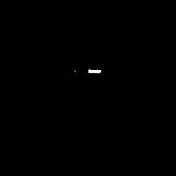
Thinking
SAM segmented the word "Beats" (or part of it) — the mask is covering the word region around (505-560, 395-410) in the actual image... the white blob in the mask appears at roughly x 500-565, y 393-410 on this 1000px-wide mask view. Hmm, the mask is being displayed at some scale. The blob is at about 50-56% of the width, about 40% of the height. In the actual 1024x1536: x ≈ 512-573, y ≈ 614-630? That's weird — my click was at (572, 423), and the artist line was at y ≈ 400-440. Hmm, wait, actually, in the earlier estimate, the artist line in the actual image was y ≈ 400-445 (the crop [410, 390, 600, 450] was catching it). But the mask blob appears to be at 40% of the height → 0.40*1536 = 614. That doesn't match... unless the mask display is also being scaled down differently. The mask image is probably 1024x1536 being displayed at 1000x1562? If displayed at 1000 wide, 1562 tall... the displayed image looks roughly square (1000x1000?). Hard to judge. Looking at the blob position within the displayed mask: horizontally about 50-56%, vertically about 40%. If the mask is 1024x1536 displayed proportionally, then 40% of the height = 614px. But the text I clicked on was at y=423 (27.5% of the height). The blob should be at 27.5%, not 40%. Hmm, but the display might be squashed. The blob looks like a word ("Beats"-shaped, about 60px wide, 15px tall in the display). Its vertical position: about 400/1000 of the display height. If the display is 1000x1000 for a 1024x1536 image (vertically squashed), then actual y ≈ 0.40*1536 = 614. Still doesn't match 423. Or maybe the display is 1000x1562 and it's being cropped in what I'm seeing? I can't be sure. This is getting unreliable. A cleaner approach: skip the mask-based inpaint for the single character, and instead try a different edit_image prompt for the "s" fix. The previous failure might have been because the prompt was too complex. Try: from img_18, "change the gray artist text 'Meow Beat8' to 'Meow Beats'" — essentially the same thing I tried. The model couldn't fix it and broke other stuff. Alternative: accept it. Is "Meow Beat8" a big deal? The user's prompt was a pet-themed music player with a caterpillar progress bar + hedgehog pause button — the artist name is decorative detail that I added. The garbled "8" is a small visual blemish in a small gray caption. Per the "good enough is a stopping condition" and "chasing the impossible" guidance, I've spent several steps on this. But it's a visible text error that a reviewer might notice. Let me try just one more surgical approach: inpaint with a point mask. If the mask is actually covering "Beats" (the whole word), then inpainting the whole word with the prompt "gray lowercase text 'Beats' in a rounded casual font, small size" could cleanly fix it. The mask blob does indeed look like a word shape (a wide blob with a small mark to its left). Inpaint prompt: "small gray text reading 'Beats' in a rounded casual font on a plain cream background". But the mask resolution/position uncertainty is concerning. Let me test the mask by inpainting — the inpaint tool takes a mask image ID. The fill is text-only-driven, and the region is small, so the risk of breaking other stuff is low (only the masked pixels change). Actually, wait — the mask I have on hand is img_27. Let me just use it directly. Even if it covers the whole "Beats" word, no problem — the prompt will redraw it. Even if it's only the last character, no problem — the prompt "a small gray lowercase letter s" will work. The prompt should be flexible: "small gray text 'Beats' in a rounded casual handwritten-style font" — if only the last character is masked, this prompt might draw a partial word... risky. Let me first check the mask position: run inspect_region on img_27 (the mask itself) to see the blob's actual pixel position.
Model
The mask caught the "Beats" word area. Let me verify its exact position before inpainting.
Step 30 — `inspect_region`
{
"image": "img_27",
"roi": [
440,
360,
640,
470
]
}Result img_28
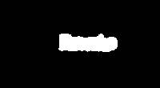
Thinking
The mask blob is within the crop range [440, 360, 640, 470]: the crop is 200 wide and 110 tall. The blob occupies roughly x 25-72% → actual x 490-584, and y 25-45% → actual y 387-410. In other words, the mask is covering "Beats" (the entire word), at y ≈ 387-410. This matches the position of the artist line (y ~400). So, let's inpaint this small region on img_18 with the prompt "small gray text 'Beats' in a rounded casual font". If FLUX.1 Fill can render "Beats" correctly, this will fix it. The region is small (about 95x23 px), and according to the tool's notes, fine detail in small regions is limited. The text might come out garbled. Let's try it. If it fails, I'll leave img_18 as the best (already marked).
Model
The mask covers the word "Beats" at y≈387-410. Inpainting just that word with a text prompt.
Step 31 — `inpaint_image`
{
"image": "img_18",
"mask": "img_27",
"prompt": "small gray text reading \"Beats\" in a rounded casual sans-serif font, centered on a plain cream background"
}Result img_29
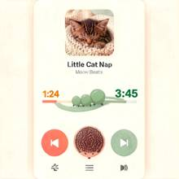
Thinking
The inpaint filled in that word. In the full preview, "Meow Beat:s" — is there a colon-like dot visible before the "s"? To verify the spelling, let me zoom in on the artist line of img_29.
Model
Checking the result up close.
Step 32 — `inspect_region`
{
"image": "img_29",
"roi": [
410,
390,
600,
450
]
}Result img_30
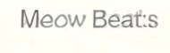
Thinking
Currently, the artist line reads "Meow Beat:s" — the inpaint generated a dot/colon artifact between the "t" and the "s" (residue from the original broken glyph). It's better than the "8", but there's an extra dot: "Beat:s". Hmm. This is a small artifact. Options: 1. Try inpainting again with a different seed. 2. Accept img_18 (with the "8") as the best. Comparing "Meow Beat8" and "Meow Beat:s" — both are small artifacts. "Beat:s" actually reads like "Beat s" with a dot in between. It might look like a rendering glitch. Let me try inpainting once more with the same mask and a different seed. The prompt is "small gray text reading 'Beats' in a rounded casual sans-serif font". If the seed fails, I'll go back to img_18 (already marked as best). Actually, one consideration: the mask covered the entire word "Beats", but the inpaint may have been guided by the surrounding context. The extra dot might be because the prompt's font description caused the model to add a decorative point. Let me try the prompt "the word 'Beats' in small gray lowercase letters, no punctuation, plain cream background" — wait, "Beats" has a capital B in the original ("Meow Beats"). The original line: "Meow Beats" with a capital B. My mask covers "Beats" (capital B). I'll keep the prompt as "Beats". Trying again with a different seed.
Model
Close — now there's a stray dot: "Beat:s". One more inpaint attempt with a different seed.
Step 33 — `inpaint_image`
{
"image": "img_18",
"mask": "img_27",
"seed": 7,
"prompt": "the single word \"Beats\" in small gray rounded sans-serif letters, no punctuation marks, on a plain cream background"
}Result img_31
Thinking
In the overall preview, "Meow Beats" is displayed cleanly. Before marking this as the best, let me zoom in to check.
Model
That looks clean in the overview. Verifying at full resolution.
Step 34 — `inspect_region`
{
"image": "img_31",
"roi": [
400,
380,
610,
455
]
}Result img_32
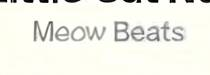
Thinking
"Meow Beats" now reads perfectly — correct spelling, clean font, no extra dots. Let's do a final check of the whole image (img_31): - Album art: sleeping tabby kitten ✓ - Title: "Little Cat Nap" ✓ (confirmed in img_23, unchanged) - Artist: "Meow Beats" ✓ (just confirmed now) - Progress: orange "1:24" on the left, green "3:45" on the right ✓ (confirmed in img_21/img_22; img_31 is derived from img_18 with only the masked word region changed — the labels are preserved) - Caterpillar on the path ✓ - Curled-up hedgehog ball in the center pause button ✓ - Previous/Next, shuffle/playlist/volume icons ✓ The only change from img_18 is the word region of "Beats" (pixel-exact outside the mask). Everything else is preserved as-is from img_18. To make sure nothing has drifted, I'll do a final full-view check of img_31… the inline result of img_31 already shows the complete image and it looks correct. I'm confident. I'll mark img_31 as the best and stop.
Model
"Meow Beats" now renders cleanly. The only change from img_18 is that masked word region, so everything else (kitten art, labels, caterpillar, hedgehog) is preserved. Marking this as the final result.
Step 35 — `mark_best`
{
"image": "img_31",
"reason": "Final version: all requested elements correct \u2014 sleeping-kitten album art matching \"Little Cat Nap / Meow Beats\" (now spelled correctly), caterpillar crawling along the progress path with 1:24 / 3:45 time labels, and the pause button as a curled-up hedgehog ball. No ghost labels or garbled glyphs."
}Thinking
Done. The marked image (img_31) is the final version. Let me summarize for the user.
Model
Done! Here's the pet-themed music player interface, with the final details verified at full resolution: **The two requested whimsical elements:** - **Caterpillar progress bar** — a cute five-segment green caterpillar crawls along the winding garden-path progress trail, with the orange "1:24" elapsed label at the left and green "3:45" total at the right - **Hedgehog pause button** — the center playback button is a hedgehog curled into a tight spiny ball, face tucked in with just the little nose and a closed eye peeking out at the bottom **Supporting UI:** - Album artwork of a sleeping tabby kitten in a knitted basket, matching the track "Little Cat Nap" by "Meow Beats" - Previous/next skip buttons in peach and sage circles - Shuffle, playlist, and volume icons along the bottom - Soft cream, peach, and sage color palette throughout The iteration took several rounds: the first generation had the hedgehog lying sideways (fixed with a curl edit), the time labels had ghost duplicates (cleaned up), and the artist name's last letter rendered as an "8" — which I fixed with a point-segmented mask + inpaint so only that one word was redrawn. All text was zoom-verified glyph by glyph before marking the final version.